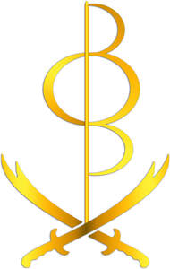

Trade Mark Journal No.2025/032 8 August 2025
UK00004242126 31 July 2025 (16,41)

- Class 16
- Stationery; Envelopes [stationery]; Paper stationery; Printed stationery; Stickers [stationery]; Office stationery; Stencils [stationery]; Wrappers [stationery]; Binders [stationery]; Stationery boxes; Folders [stationery]; Stationery folders; Office paper stationery; Writing stationery; Scented stationery; Adhesives for stationery; Paper folders [stationery]; Thumbtacks [stationery]; Pads [stationery]; Transparencies [stationery]; Party stationery; Pencil ornaments [stationery]; Pencil ornaments (stationery); Files [stationery]; Envelopes for stationery use; Protractors [for stationery and office use]; School supplies [stationery]; Copying paper [stationery]; Seals [stationery]; Covers [stationery]; Stationery and educational supplies; Marking pens [stationery]; Paper sheets [stationery]; Pins [stationery]; Pocket books [stationery]; Announcement cards [stationery]; Clips for paper [stationery]; Manifolds [stationery]; Cases for stationery; Stationery cases; Index cards [stationery]; Glitter pens for stationery purposes; Stationery (Cabinets for -) [office requisites]; Cabinets for stationery [office requisites]; Document holders [stationery]; Glitter for stationery purposes; Adhesives for stationery purposes; Glue pens for stationery purposes; Writing cases [stationery]; Desktop cabinets for stationery [office requisites]; Adhesive pads [stationery]; Tapes (adhesive -) [stationery]; Self-adhesive tapes for stationery and household purposes; Self-adhesive tapes for stationery or household purposes; Adhesives for stationery or household purposes; Adhesive foils stationery; Felt mats for Chinese calligraphy (stationery); Plantable seed paper [stationery]; Document files [stationery]; Marking inks for stationery purposes; Pastes for stationery or household purposes; Organizers for stationery use; Label printing machines for household and stationery use; Self-adhesive tapes for stationery use; Glue for stationery or household purposes; Adhesives for stationery and household use; Document holders being articles of stationery; Adhesives for stationery or household use; Gummed tape [stationery]; Paste for stationery or household purposes; Adhesive tapes for stationery or household purposes; Gummed cloth for stationery purposes; Adhesive tapes for stationery purposes; Pastes and other adhesives for stationery or household purposes; Rubber bands [stationery]; Seaweed glue for stationery; Notepads; Rubber cements for stationery; Glue for stationery or household use; Gelatine glue for stationery or household purposes; Plastic adhesives for stationery or household purposes; Gums [adhesives] for stationery or household purposes; Isinglass for stationery or household purposes; Gluten [glue] for stationery or household purposes; Gum arabic glue for stationery or household purposes; Adhesive bands for stationery purposes; Spirit gum for stationery purposes; Paper embossers [office requisites]; Latex glue for stationery or household purposes; Glitter glue for stationery purposes; Letterhead paper; Notepaper; Letterheads; Adhesive tape for stationery purposes; Adhesive tape cutters being stationery; File pockets for stationery use; Adhesives [glues] for stationery or household purposes; Starch paste for stationery; Adhesive tape dispensers for household or stationery use; Paper envelopes for packaging; Wood pulp board [stationery]; Automatic paper clip dispensing machines for office or stationery use; Printed paper invitations; Reinforced stationery tabs; Stapling guns (Electric -) for stationery use; Book covers; Book binders; Book bindings; Book jackets; Cheque book covers; Book marks; Check book covers; Book ends; Book wrappings; Story books; Book markers; Manuscript books; Non-fiction books; Series of non-fiction books; Leather book covers; Leather appointment book covers; Books; Copy books; Comic books; Book binding material; Writing books; Guide books; Recipe books; Paper book markers; Cheque book cases; Book binding materials; Check book holders; Check book cases; Song books; Series of fiction books; Sketch books; Picture books; Manga comic books; Cheque book holders; Fiction books; Poster books; Wallpaper sample book; Autograph books; Covers for books; Reference books; Appointment books; Hymn books; Printed books; Memorandum books; Coloring books; Guest books; Gift books; Covers for cheque books; Cookery books; Note books; Prayer books; Wirebound books; Writing or drawing books; Resource books; Flip books; Travel guide books; School writing books; Information books; Birthday books; Painting books; Travel books; Colouring books; Jackets of paper for books; Cheque books; Check books; Address books; Drawing books; Sticker books; Blank journal books; Wedding books; Account books; Fantasy books; Coupon books; Pop-up books; Pocket memorandum books; Date books; Commemorative books; Scrap books; Composition books; Printed music books; Agenda books; Paper for wrapping books; Bill books; Cook books; Index books; Dictation books; Series of computer game hint books; Telephone books; Music note books; Ledger books; Baby books; Baby books [storybooks]; Notebook paper; Notebooks; Spiral-bound notebooks; Notebook dividers; Notebook covers; Pocket notebooks; Blank paper notebooks; Reporters' notebooks; Holders for notebooks; Computer paper; Jotters; Pen and pencil boxes; Typewriter paper; Illustrated notepads; Binder paper; Pen and pencil cases; Desk diaries; Blank paper computer tapes for recording programs; Pen calligraphy copybooks; Stands for pen and pencil; Blank writing journals; Paper folders; Adhesive notepads; Self-adhesive paper for notes; Pocket diaries; Pen and pencil holders; Pen or pencil holders; Ball-point pen and pencil sets; Loose-leaf binders; Binders (Loose-leaf -); Writing paper pads; Scribbling pads; Desktop document stands; Writing paper; Pocket pen shields; Desktop document racks; Sketchbooks; Blank journals; Electrocardiograph paper; Pen boxes; Scribble pads; Pocket handkerchiefs of paper; Computer handbooks; Computer printer ribbons; Shelf paper; Padded bags of paper; Drawing paper; Pens [writing implements] incorporating tips for operating touchscreen devices; Calligraphy paper; Calendar desk pads; Printed seminar notes; Drawing pens; Holders for notepads; Pocket calendars; Writing tablets.
- Class 41
- Book publishing; Book and review publishing; Book rental; Book loaning; Book lending; Publication of books; Books (Publication of -); Electronic book reader rental; Publication of text books; Rental of electronic book readers; Publication of books, reviews; Publication of lyrics of songs in book form; Publishing of books; Publishing of books and reviews; Publication of audio books; Publication of music books; Services for the publication of guide books; Publication of year books; Publication of educational books; Publishing of instructional books; Rental of books; Services for the publication of books; Book club services providing information relating to books; Providing online non-downloadable comic books and graphic novels; Publishing of books, magazines; Hire of books; Online publication of electronic books and journals; Publication of electronic books and journals online; Loan of books; Providing online comic books, not downloadable; Multimedia publishing of books.
Fadi Elias